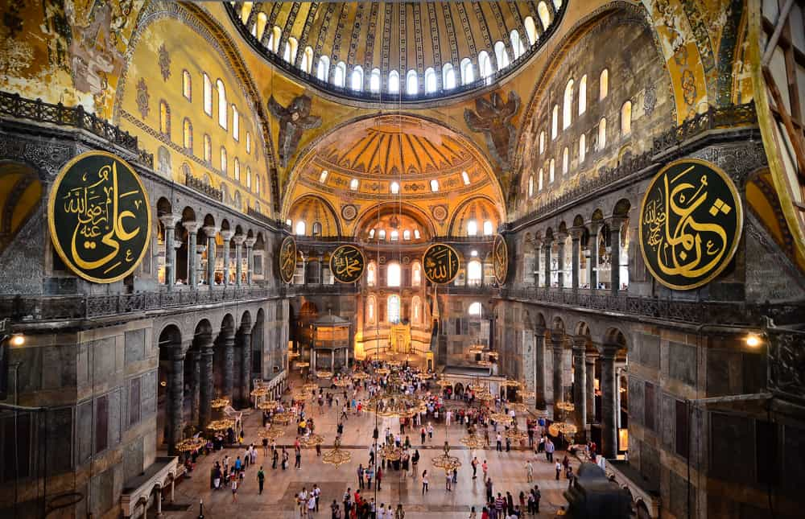
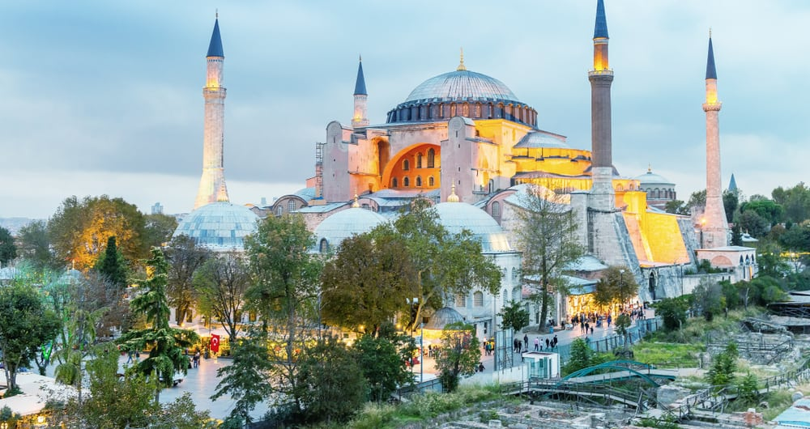

Ayasofya Camii
Göz kamaştırıcı Ayasofya, I. yüzyıldan günümüze kadar ulaşmış olan önemli bir eserdir. Bizans İmparatoru Jüstinyen’in emri üzerine 532-537 yılları arasında inşası tamamlanmış.
Trallesli matematikçi ve fizikçi Anthemius ile Miletli mimar İsidore tarafından tasarlanan kilisenin yapımında 10 bin işçi ve 100 usta çalıştırılmış.
Ayasofya bir yangın ve bir isyan sonrasında aldığı hasarlardan dolayı toplamda üç kez yeniden inşa edilmiştir. Üçüncüsü, yani günümüzdeki hali, Jüstinyen’in emriyle inşa edilmiş olandır.
Dünyadaki en önemli mimari yapılardan biri olarak kabul edilen Ayasofya, 1453 yılında Fatih Sultan Mehmet’in İstanbul’u fethetmesine kadar Rum Ortodoks Patrikliği’nin merkezi olarak kabul edilmiş.

Ayasofya, Jüstinyen’in daha önce yaptırdığı ve bir ayaklanma sırasında yıkılan kilisesinin ardından daha gösterişli bir yapı istemesiyle inşa edilmiş. Dev kubbesi, göz alıcı mozaikleri ve içindeki ince işçiliklerle hala ihtişamını koruyan bir eserdir.
Ayasofya’nın şu an sahip olduğu dört minareden biri, Fatih Sultan Mehmet zamanında yapılmış. Diğerleri ise; yavaş yavaş eklenmiş ve hepsi Mimar Sinan tarafından yapılmış. 1317 yılında da binanın yıkılacağı düşünülerek, dev payandalar eklenip, bina desteklenmiş.
Ayasofya’nın bahçesinde 1740 yılında inşa edilmiş olan, tek odalı bir ilkokul ve barok şadırvan bulunmaktadır. Sağ tarafta pek çok hükümdarın, eşinin ve çocuklarının türbelerinin bulunduğu yer, binanın kilise olduğu zamanlarda vaftizhane olarak kullanılıyormuş.
Kimlerin türbesinin bulunduğuna gelirsek; Sultan I. Mustafa, Sultan Deli İbrahim, Sultan II. Selim’in, III. Murad’a rakip olmaması için öldürülen 5 oğlu ile III. Murad, Murad’ın eşi Safiye ve 23 oğlu ile III. Mehmet ve eşi Handan.
Türbelerin hemen yanında bulunan ve zarif duruşuyla ilgi çeken muvakkithane, 19. yüzyılda Fossati Kardeşler’in Ayasofya’ya ilave ettiği bir yapıdır. Fossati Kardeşler, Tanzimat Dönemi’nde ülkemizde 50’den fazla yapıya imzasını atmış olan İsviçreli mimarlardır.
Ayasofya’nın içine girildiğinde etkileyici havası, herkesi kendine çeker. Biri sade, diğeri mermer duvar ve mozaiklerle süslenmiş olan çift narteksli bir girişi vardır. Bu nartekste bulunan mozaikler, Jüstinyen döneminden kalmadır ve göz kamaştırıcı parlaklığını, içinde kullanılan altına borçludur.
Dokuz devasa kapı, iç narteksten, ana salona doğru uzanır. Bu kapılar arasından en önemlisi, ortada bulunan Emperyal Kapı’dır. Çünkü üzerinde tahta oturmuş İsa ile ona secde eden ve VI. Leo olduğu tahmin edilen bir imparator tasviri vardır. Leo, üç karısı olan fakat hiç erkek çocuğu olmadığı için kilisenin karşı çıkmasına rağmen dördüncü evliliğini yapmış bir imparatordur. Bu tasvir, onun günahlarının bağışlanması için yalvarışını sembolize eder.
İçerinin ışık almasını sağlayan pencereli dev kubbeyi destekleyen dört büyük kolon, Tesali’den getirtilen yeşil mermerlerden yapılmış.
Eski kubbenin bu kadar büyük olmadığı biliniyor. Fakat bu, Ayasofya’nın depreme dayanıksız olmasına yol açmış ve 558’de yıkılma aşamasına gelmiş. Bunun üzerine Miletli İsidorius’un aynı ismi taşıyan yeğeni, her şeyi yeniden hesaplayarak bu dev kubbeyi inşa etmiş.
Osmanlı Dönemi’nde Mimar Sinan’ın eklediği istinat duvarları ile daha da sağlam hale gelen yapı, bu iki mimar sayesinde günümüze kadar ulaşabilmiş.
Yarım kubbenin üzerinde çocuk İsa’yı kucağına alıp, tahtta oturmuş olan Meryem Ana mozaiği bulunuyor. Bu mozaiğin İkonoplastik dönemden sonra bir kiliseye konulmuş olan ilk tasvir olduğu bilinir.

Bu kubbenin sağındaki kemerde Melek Cebrail mozaiği bulunuyor. Ona karşıdan bakan Melek Mikail mozaiği, depremde düştüğü için yeri boş kalmış.
Kubbenin alt kısmında Altı Kanatlı Serafim Melekleri’nin tasvir edildiği mozaikler var. Bunlardan birisi 2009 yılındaki restorasyon çalışmasında ortaya çıkarıldı; diğerleri hala gizemliliğini koruyor.
1847 ve 1849 yılları arasında Sultan I. Abdülmecid tarafından Ayasofya’ya çeşitli eklemeler yapılması için getirilen Fossati Kardeşler, iç cephede de bazı dokunuşlar yapmışlar.
O dönemde Abdülmecid; Kazasker İzzet Efendi’nin hat sanatıyla Allah, Hz. Muhammed, Ebu Bekir, Osman, Ömer, Ali, Hasan ve Hüseyin isimlerini yazdığı 8 plakayı da sütunlara astırmış.
Sütunların üstünde Jüstinyen ve eşi Theodora’nın isimleri de yazılıdır. Çünkü ikisi arasında efsanevi bir aşk olduğu ve Ayasofya’nın yapımı için Theodora’nın Jüstinyen’i teşvik ettiği söylenir.
İçeride bulunan rampayı çıkıp, ikinci katta bulunan galeri bölümüne ulaşılır. Galerinin mermerleri, Bizans sepet işi sütun başlıkları, çeşitli hükümdarların, İsa ve Meryem Ana’nın mozaik tasvirleri oldukça cezbedici bir etkiye sahiptir.
Galeride, İsa’nın yüzünün iki tarafının farklı resmedildiği bir mozaik vardır. Bunun sebebi ise; mozaiğe uzaktan bakınca, İsa’nın direkt bakan kişi ile göz göze gelmesini sağlamakmış.
1. Haçlı Seferi’nde Constantinople’a saldırı düzenleyen ve yağmalayan Venedik Dükü Enrico Dandolo’nun gömüldüğü yeri gösteren mezar taşı da galeri bölümünde bulunuyor. Kendisinin vasiyeti buraya gömülmekmiş ama söylentiye göre; İmparator şehri geri alınca, mezarın içinden onun kemiklerini çıkarıp, köpeklere atmış. Ve orada sadece mezar taşı kalmış.
Galeri bölümünde bulunan İmparatoriçe Locası’nın ilerisindeki kapılar, Cennet ve Cehennem Kapıları olarak tasvir edilmiş. Zaten Ayasofya’nın kapıları da oldukça ihtişamlıdır ve her birinin farklı bir anlamı olduğu söylenir.
Yapının çıkışındaki kapı üstünde bulunan ayna sayesinde, arkada kalan mozaikler görülüyor. Mozaiklerde Meryem Ana’ya kent planını gösteren İmparator Konstantin ile kilise maketini gösteren Jüstinyen tasvir edilmiş. Bu çıkış kapısı, imparatorların kiliseye girerken tacını ve kılıcını bıraktıkları Savaşçılar Geçidi olarak adlandırılır.